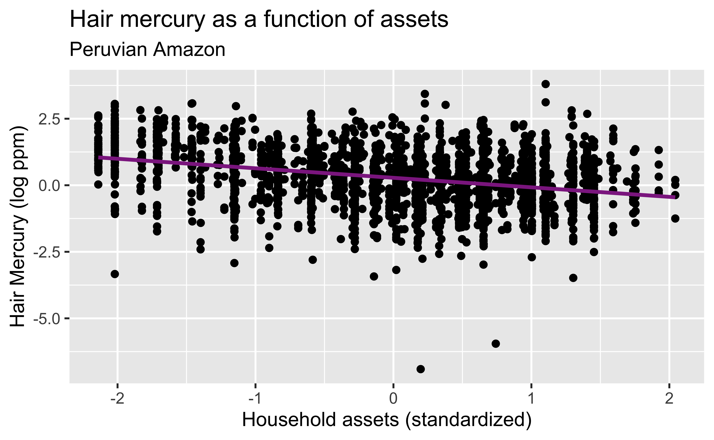
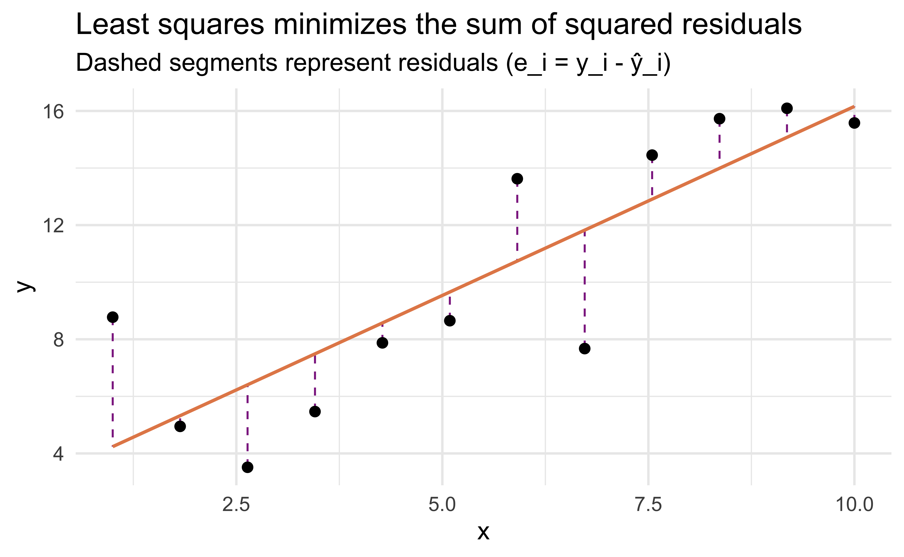
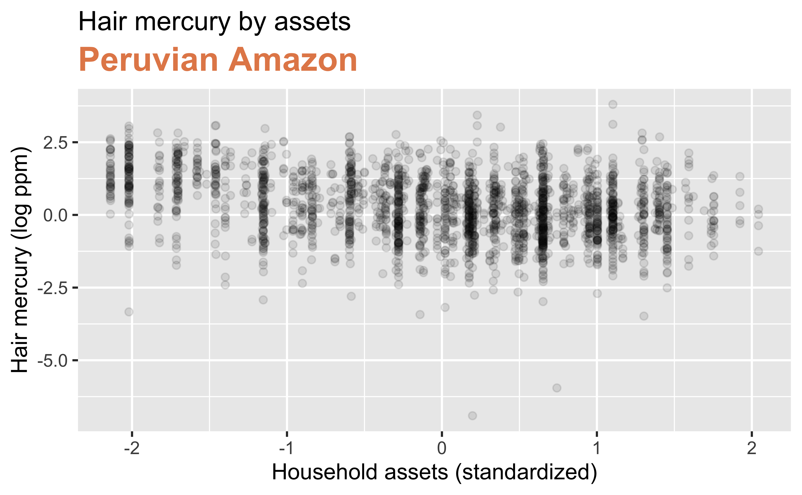
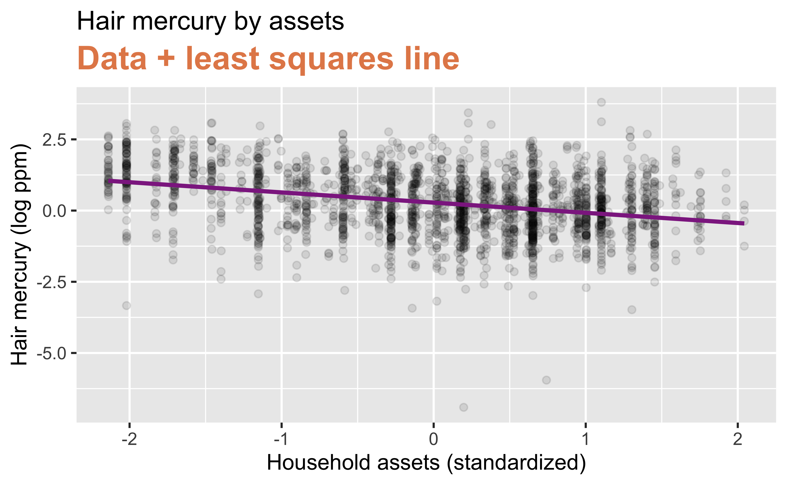
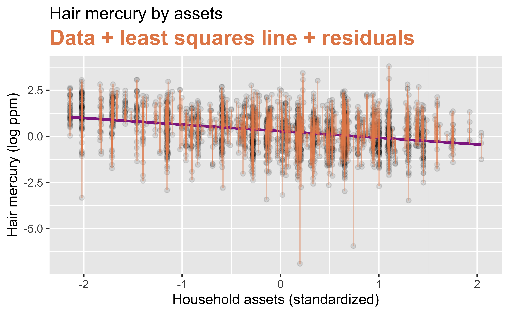

library(tidyverse)
library(tidymodels)
library(readr)
mercury <- readr::read_csv("../data/mercury_reg.csv")
mercury <-
mercury %>%
# scale() subtracts the mean and divides by the SD to make the units "standard deviations" like a z-score
mutate(assets_sc=scale(SESassets)) %>%
#another variable we may use later
mutate(form_min_sc=scale(FM_buffer)) %>%
#so I don't have to remember coding
mutate(sex,sex_cat=ifelse(sex==1,"Male","Female")) %>%
mutate(native,native_cat=ifelse(native==1,"Native","Non-native")) Model Fitting and Interpretation
Introduction to Global Health Data Science
Amy Herring
Duke University
STA/GLHLTH 198 Fall 2026
2026-10-09
Models with numeric explanatory variables
Mercury and Assets
Are mercury concentrations in hair related to household socioeconomic position, as measured by assets?
Goal: Predict mercury from assets
\[\widehat{y}_{i} = \widehat{\beta}_0 + \widehat{\beta}_1 \times x_{i}\] Here \(y_i\) represents log hair mercury for subject \(i\), and \(x_i\) represents standardized household income.


Step 1: Specify model
Step 2: Set model fitting engine
Step 3: Fit model & estimate parameters
… using formula syntax
A closer look at model output
#> parsnip model object
#>
#>
#> Call:
#> stats::lm(formula = lhairHg ~ assets_sc, data = data)
#>
#> Coefficients:
#> (Intercept) assets_sc
#> 0.2795 -0.3577\[\widehat{y}_{i} = 0.2795 - 0.3577 \times x_{i}\]
A tidy look at model output
#> # A tibble: 2 × 5
#> term estimate std.error statistic p.value
#> <chr> <dbl> <dbl> <dbl> <dbl>
#> 1 (Intercept) 0.280 0.0213 13.1 7.49e-38
#> 2 assets_sc -0.358 0.0216 -16.5 3.90e-58\[\widehat{y}_{i} = 0.280 - 0.358 \times x_{i}\]
Slope and intercept
\[\widehat{y}_{i} = 0.280 - 0.358 \times x_{i}\]
-
Slope: For each standard deviation increase in assets, the log hair mercury level is expected to be lower, on average, by 0.358 log ppm.
- perhaps not a very useful statement given the scale
-
Intercept: Individuals with household assets at the mean level (
assets_sc=0) are expected to have hair mercury concentrations of 0.280 log ppm, on average- Remember
assets_scwas standardized, soassets_sc=0 does not mean “no assets” but instead means “average assets” as it corresponds to an assets z-score of 0.
- Remember
Slope and intercept: easy/standard case
Interpretation is a little easier without a log transformation. Suppose our outcome \(y\) is exam score, and the predictor \(x\) is hours studied, and we fit a linear model and get the following estimated line.
\[\widehat{y}_{i} = 60 + 5 \times x_{i}\]
Slope: For each additional hour of study, the exam score is expected to be higher, on average, by 5 points.
Intercept: Individuals who do not study are expected to have exam scores of 60 points, on average
Note: now you can see the danger of extrapolating beyond the range of the data. We don’t expect someone who studies 20 hours to have an exam score of 160 on a 100-point scale – at some point, mastery (hopefully not futility!) is reached.
Better Interpretation in Models wiht Log Transformation
Working with logs
Subtraction and logs: \(log(a) − log(b) = log(a / b)\)
Natural logarithm: \(e^{log(x)} = x\)
We can use these identities to “undo” the log transformation
Interpreting the slope
The slope coefficient for the log transformed model is -0.3577, meaning the log mercury difference between people whose household incomes are one SD apart is predicted to be -0.3577 log ppm.
Using this information, and properties of logs that we just reviewed, fill in the blanks in the following alternate interpretation of the slope:
For each additional SD the household assets are greater, the hair mercury concentration is expected to be
___, on average, by a factor of___.
For each additional increase in scaled assets, hair mercury content is expected to be
___, on average, by a factor of___.
\[ log(\text{hair Hg for assets x+1}) - log(\text{hair Hg for assets x}) = -0.3577 \]
\[ log\left(\frac{\text{hair Hg for assets x+1}}{\text{hair Hg for assets x}}\right) = -0.3577 \]
\[ e^{log\left(\frac{\text{Hg for assets x+1}}{\text{Hg for assets x}}\right)} = e^{-0.3577} \]
\[ \frac{\text{Hg for assets x+1}}{\text{Hg for assets x}} \approx 0.70 \]
For each SD increase in assets, the hair Hg is expected to be lower, on average, by a factor of 0.70.
Correlation does not imply causation
Remember this when interpreting model coefficients

Source: XKCD, Cell phones
Parameter estimation
Linear model with a single predictor
- We’re interested in \(\beta_0\) (population parameter for the intercept) and \(\beta_1\) (population parameter for the slope) in the following model:
\[y_{i} = \beta_0 + \beta_1~x_{i}+\varepsilon_i\]
where \(\varepsilon\) represents random error around our mean
- Tough luck, you can’t have them…
- So we use sample statistics to estimate them, using the notation \(b\) or \(\widehat{\beta}\) to distinguish our estimates from the true parameters \(\beta\)
\[\widehat{y}_{i} = b_0 + b_1~x_{i}\] or \[\widehat{y}_i = \widehat{\beta}_0 + \widehat{\beta}_1~x_i\]
Least squares regression
The regression line minimizes the sum of squared residuals.
If \(e_i = y_i - \hat{y}_i\), then, the regression line minimizes \(\sum_{i = 1}^n e_i^2\).

Visualizing residuals

Visualizing residuals (cont.)

Visualizing residuals (cont.)

Properties of least squares regression
- The regression line goes through the center of mass point, the coordinates corresponding to average \(x\) and average \(y\), \((\bar{x}, \bar{y})\):
\[\bar{y} = b_0 + b_1 \bar{x} ~ \rightarrow ~ b_0 = \bar{y} - b_1 \bar{x}\]
- The slope has the same sign as the correlation coefficient: \(b_1 = r \frac{s_y}{s_x}\)
- \(s_x\) is the standard deviation of the explanatory variable \(x\), and \(s_y\) is the standard deviation of the response variable \(y\)
- If \(y\) varies a lot more than \(x\) does (large \(s_y\) relative to \(s_x\)), the slope will be steeper for the same correlation — a small change in \(x\) corresponds to a much bigger typical change in \(y\)
- In our example, \(s_x\) is the standard deviation of
assets_sc(which is 1, since it was standardized), and \(s_y\) is the standard deviation oflhairHg
- The sum of the residuals is zero: \(\sum_{i = 1}^n e_i = 0\)
- The residuals and \(x\) values are uncorrelated